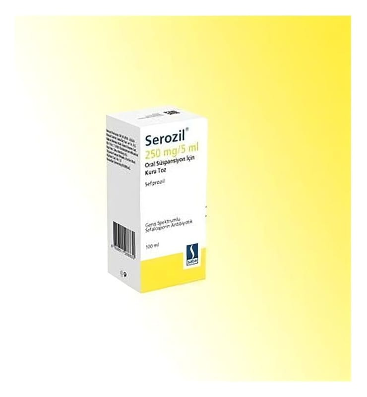

Serozil 250 mg/5 ml Oral Süspansiyon Hazırlamak İçin Toz, 100 ml

Ne için kullanılır
KT · Bölüm 1• SEROZİL kutuda, pilver proof kapaklı, 60 ml ve 100 ml’lik kahverengi cam şişede ve 5 ml’ lik ölçekli plastik kaşık ile birlikte kullanıma sunulmaktadır. • SEROZİL süspansiyonun her 5 ml’si etkin madde olarak 250 mg anhidr sefprozile eşdeğerde sefprozil monohidrat içerir. • SEROZ İL, beta-laktam antibiyotikler olarak adlandırılan bir ilaç grubuna dahildir. • SEROZİL, bademcik ve yutak iltihabı (tonsillofarenjit), sinüs iltihabı (akut sinüzit) veya orta kulak iltihabı (otitis media) gibi üst solunum yolu enfeksiyonlarının, akciğerlerin küçük havayollarının iltihabı (bronşiolit) gibi alt solunum yolu enfeksiyonlarının ve komplike olmayan deri ve deri eki enfeksiyonlarının tedavisinde kullanılır.